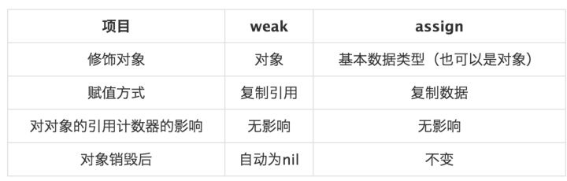

常见iOS面试题基础篇2
- 问:类别的作用?继承和类别在实现中有何区别?
- 问:在项目什么时候选择使用GCD，什么时候选择NSOperation?
- 问:Object-C有私有方法吗？私有变量呢？
- 问:内存管理 Autorelease、retain、copy、assign的set方法和含义？
- 问:Object-C有多继承吗？没有的话用什么代替？cocoa 中所有的类都是NSObject 的子类
- 问:Objective-C堆和栈的区别？
- 问:什么时候用delegate,什么时候用Notification?
- 问:写一个”标准"宏MIN ，这个宏输入两个参数并返回较小的一个。
- 问:关键字const有什么含意？修饰类呢?static的作用,用于类呢?还有extern c的作用
- 问: http和scoket通信的区别？
- 问:TCP和UDP的区别？
- 问:请简要说明viewDidLoad和viewDidUnload何时调用
问:类别的作用?继承和类别在实现中有何区别?
答:category 可以在不获悉，不改变原来代码的情况下往里面添加新的方法，只能添加，不能删除修改，并且如果类别和原来类中的方法产生名称冲突，则类别将覆盖原来的方法，因为类别具有更高的优先级。
类别主要有3个作用：
1).将类的实现分散到多个不同文件或多个不同框架中。
2).创建对私有方法的前向引用。
3).向对象添加非正式协议。
继承可以增加，修改或者删除方法，并且可以增加属性。
问:在项目什么时候选择使用GCD，什么时候选择NSOperation?
答:项目中使用NSOperation的优点是NSOperation是对线程的高度抽象，在项目中使用它，会使项目的程序结构更好，子类化NSOperation的设计思路，是具有面向对象的优点(复用、封装)，使得实现是多线程支持，而接口简单，建议在复杂项目中使用。
项目中使用GCD的优点是GCD本身非常简单、易用，对于不复杂的多线程操作，会节省代码量，而Block参数的使用，会是代码更为易读，建议在简单项目中使用。
问:Object-C有私有方法吗？私有变量呢？
答:objective-c – 类里面的方法只有两种, 静态方法和实例方法. 这似乎就不是完整的面向对象了,按照OO的原则就是一个对象只暴露有用的东西. 如果没有了私有方法的话, 对于一些小范围的代码重用就不那么顺手了. 在类里面声名一个私有方法
@interface Controller : NSObject { NSString *something; }
+ (void)thisIsAStaticMethod;
– (void)thisIsAnInstanceMethod;
@end
@interface Controller (private) -
(void)thisIsAPrivateMethod;
@end
@private可以用来修饰私有变量
在Objective‐C中，所有实例变量默认都是私有的，所有实例方法默认都是公有的
问:内存管理 Autorelease、retain、copy、assign的set方法和含义？
答:1).你初始化(alloc/init)的对象，你需要释放(release)它。例如：
NSMutableArray aArray = [[NSArray alloc] init]; 后，需要 [aArray release];
2).你retain或copy的，你需要释放它。例如：
[aArray retain] 后，需要 [aArray release];
3).被传递(assign)的对象，你需要斟酌的retain和release。例如：
obj2 = [[obj1 someMethod] autorelease];
对象2接收对象1的一个自动释放的值，或传递一个基本数据类型(NSInteger，NSString)时：你或希望将对象2进行retain，以防止它在被使用之前就被自动释放掉。但是在retain后，一定要在适当的时候进行释放。
关于索引计数(Reference Counting)的问题
retain值 = 索引计数(Reference Counting)
NSArray对象会retain(retain值加一)任何数组中的对象。当NSArray被卸载(dealloc)的时候，所有数组中的对象会 被 执行一次释放(retain值减一)。不仅仅是NSArray，任何收集类(Collection Classes)都执行类似操作。例如 NSDictionary，甚至UINavigationController。
Alloc/init建立的对象，索引计数为1。无需将其再次retain。
[NSArray array]和[NSDate date]等“方法”建立一个索引计数为1的对象，但是也是一个自动释放对象。所以是本地临时对象，那么无所谓了。如果是打算在全Class中使用的变量(iVar)，则必须retain它。
缺省的类方法返回值都被执行了“自动释放”方法。(*如上中的NSArray)
在类中的卸载方法“dealloc”中，release所有未被平衡的NS对象。(*所有未被autorelease，而retain值为1的)
问:Object-C有多继承吗？没有的话用什么代替？cocoa 中所有的类都是NSObject 的子类
答:多继承在这里是用protocol 委托代理 来实现的
你不用去考虑繁琐的多继承 ,虚基类的概念.
ood的多态特性 在 obj-c 中通过委托来实现. 来自:http://api.codertopic.com/itapi/html5/itshare.htm
我的手机 11:00:25
问:C和obj-c 如何混用?
答:1).obj-c的编译器处理后缀为m的文件时，可以识别obj-c和c的代码，处理mm文件可以识别obj-c,c,c++代码，但cpp文件必须只能用c/c++代码，而且cpp文件include的头文件中，也不能出现obj-c的代码，因为cpp只是cpp
2).在mm文件中混用cpp直接使用即可，所以obj-c混cpp不是问题
3).在cpp中混用obj-c其实就是使用obj-c编写的模块是我们想要的。
如果模块以类实现，那么要按照cpp class的标准写类的定义，头文件中不能出现obj-c的东西，包括#import cocoa的。实现文件中，即类的实现代码中可以使用obj-c的东西，可以import,只是后缀是mm。
如果模块以函数实现，那么头文件要按c的格式声明函数，实现文件中，c++函数内部可以用obj-c，但后缀还是mm或m。
总结：只要cpp文件和cpp include的文件中不包含obj-c的东西就可以用了，cpp混用obj-c的关键是使用接口，而不能直接使用 实现代 码，实际上cpp混用的是obj-c编译后的o文件，这个东西其实是无差别的，所以可以用。obj-c的编译器支持cpp
问:Objective-C堆和栈的区别？
答:管理方式：对于栈来讲，是由编译器自动管理，无需我们手工控制；对于堆来说，释放工作由程序员控制，容易产生memory leak。
申请大小：
栈：在Windows下,栈是向低地址扩展的数据结构，是一块连续的内存的区域。这句话的意思是栈顶的地址和栈的最大容量是系统预先规定好的，在 WINDOWS下，栈的大小是2M（也有的说是1M，总之是一个编译时就确定的常数），如果申请的空间超过栈的剩余空间时，将提示overflow。因 此，能从栈获得的空间较小。
堆：堆是向高地址扩展的数据结构，是不连续的内存区域。这是由于系统是用链表来存储的空闲内存地址的，自然是不连续的，而链表的遍历方向是由低地址向高地址。堆的大小受限于计算机系统中有效的虚拟内存。由此可见，堆获得的空间比较灵活，也比较大。
碎片问题：对于堆来讲，频繁的new/delete势必会造成内存空间的不连续，从而造成大量的碎片，使程序效率降低。对于栈来讲，则不会存在这个问题，因为栈是先进后出的队列，他们是如此的一一对应，以至于永远都不可能有一个内存块从栈中间弹出
分配方式：堆都是动态分配的，没有静态分配的堆。栈有2种分配方式：静态分配和动态分配。静态分配是编译器完成的，比如局部变量的分配。动态分配由alloca函数进行分配，但是栈的动态分配和堆是不同的，他的动态分配是由编译器进行释放，无需我们手工实现。
分配效率：栈是机器系统提供的数据结构，计算机会在底层对栈提供支持：分配专门的寄存器存放栈的地址，压栈出栈都有专门的指令执行，这就决定了栈的效率比较高。堆则是C/C++函数库提供的，它的机制是很复杂的。
问:什么时候用delegate,什么时候用Notification?
答:delegate针对one-to-one关系，用于sender接受到reciever的某个功能反馈值。
notification针对one-to-one/many/none,reciver,用于通知多个object某个事件。
问:写一个”标准"宏MIN ，这个宏输入两个参数并返回较小的一个。
答:#define MIN(A,B) （（A） <= (B) ? (A) : (B))
这个测试是为下面的目的而设的：
标识#define在宏中应用的基本知识。这是很重要的，因为直到嵌入(inline)操作符变为标准C的一部分，宏是方便产生嵌入代码的唯一方
法，
对于嵌入式系统来说，为了能达到要求的性能，嵌入代码经常是必须的方法。
三重条件操作符的知识。这个操作符存在C语言中的原因是它使得编译器能产生比 if-then-else 更优化的代码，了解这个用法是很重要的。
懂得在宏中小心地把参数用括号括起来
我也用这个问题开始讨论宏的副作用，例如：当你写下面的代码时会发生什么事？
least = MIN(*p++, b);
结果是：
((*p++) <= (b) ? (*p++) : (*p++))
这个表达式会产生副作用，指针p会作三次++自增操作。
问:关键字const有什么含意？修饰类呢?static的作用,用于类呢?还有extern c的作用
答:const 意味着"只读"，下面的声明都是什么意思？
const int a;
int const a;
const int *a;
int * const a;
int const * a const;
前两个的作用是一样，a是一个常整型数。
第三个意味着a是一个指向常整型数的指针（也就是，整型数是不可修改的，但指针可以）。
第四个意思a是一个指向整型数的常指针（也就是说，指针指向的整型数是可以修改的，但指针是不可修改的）。
最后一个意味着a是一个指向常整型数的常指针（也就是说，指针指向的整型数是不可修改的，同时指针也是不可修改的）。
结论：
关键字const的作用是为给读你代码的人传达非常有用的信息，实际上，声明一个参数为常量是为了告诉了用户这个参数的应用目的。
如果你曾花很多时间清理其它人留下的垃圾，你就会很快学会感谢这点多余的信息。（当然，懂得用const的程序员很少会留下的垃圾让别人来清理的） 通过给优化器一些附加的信息，使用关键字const也许能产生更紧凑的代码。合理地使用关键字const可以使编译器很自然地保护那些不希望被改变的参数，防止其被无意的代码修改。简而言之，这样可以减少bug的出现。
1).欲阻止一个变量被改变，可以使用 const 关键字。在定义该 const 变量时，通常需要对它进行初
始化，因为以后就没有机会再去改变它了；
2).对指针来说，可以指定指针本身为 const，也可以指定指针所指的数据为 const，或二者同时指
定为 const；
3).在一个函数声明中，const 可以修饰形参，表明它是一个输入参数，在函数内部不能改变其值；
4).对于类的成员函数，若指定其为 const 类型，则表明其是一个常函数，不能修改类的成员变量；
5).对于类的成员函数，有时候必须指定其返回值为 const 类型，以使得其返回值不为“左值”。
问: http和scoket通信的区别？
答:http是客户端用http协议进行请求，发送请求时候需要封装http请求头，并绑定请求的数据，服务器一般有web服务器配合（当然也非绝对）。 http请求方式为客户端主动发起请求，服务器才能给响应，一次请求完毕后则断开连接，以节省资源。服务器不能主动给客户端响应（除非采取http长连接 技术）。iphone主要使用类是NSUrlConnection。
scoket是客户端跟服务器直接使用socket“套接字”进行连接，并没有规定连接后断开，所以客户端和服务器可以保持连接通道，双方 都可以主动发送数据。一般在游戏开发或股票开发这种要求即时性很强并且保持发送数据量比较大的场合使用。主要使用类是CFSocketRef。
问:TCP和UDP的区别？
答:TCP全称是Transmission Control Protocol，中文名为传输控制协议，它可以提供可靠的、面向连接的网络数据传递服务。传输控制协议主要包含下列任务和功能：
确保IP数据报的成功传递。
对程序发送的大块数据进行分段和重组。
确保正确排序及按顺序传递分段的数据。
通过计算校验和，进行传输数据的完整性检查。
TCP提供的是面向连接的、可靠的数据流传输，而UDP提供的是非面向连接的、不可靠的数据流传输。
简单的说，TCP注重数据安全，而UDP数据传输快点，但安全性一般
问:请简要说明viewDidLoad和viewDidUnload何时调用
答:viewDidLoad在view从nib文件初始化时调用，loadView在controller的view为nil时调用。此方法在编程实现view时调用，view控制器默认会注册memory warning notification，当view controller的任何view没有用的时候，viewDidUnload会被调用，在这里实现将retain的view release，如果是retain的IBOutlet view 属性则不要在这里release，IBOutlet会负责release 。
常见iOS面试题基础篇
- 详细理解Objective-C的3个动态特性
- iOS中的静态库和Framework区别是什么？
- NullSafe 的原理是什么?
- objc_msgForward函数是做什么的，直接调用它将会发生什么？
- Toll-Free Bridging 是什么？什么情况下会使用？
- import 跟#include 又什么区别，@class呢, #import<> 跟 #import””又什么区别?
- 属性readwrite，readonly，assign，retain，copy，nonatomic 各是什么作用，在那种情况下用?
-
写一个setter方法用于完成
@property (nonatomic,retain)NSString *name,写一个setter方法用于完成@property(nonatomic，copy)NSString *name - 常见的object-c的数据类型有那些， 和C的基本数据类型有什么区别?如：NSInteger和int
- 原子(atomic)跟非原子(non-atomic)属性有什么区别?
- MVC设计模式是什么？ 你还熟悉什么设计模式？
详细理解Objective-C的3个动态特性
- 动态类型 简单点说就是id 类型，可以理解为通用对象类型，一旦被赋值，可以被强制转化为其它类型。可以通过[obj isKindOfClass:aClass]，来判断其具体类型，作相应操作，在委托（delegate）中体现得比较充分；
- 动态绑定 基于动态类型的，某个实例被确定后，其类型也是确定的，其对应的属性和方法将会因为类型的确定而确定，这就是动态绑定；
- 动态加载 程序启动时动态加载可执行代码和资源。如多国语言的程序，会在程序启动时只加载设定为某一种语言的资源，而不是全部加载。基于Utility Application的程序，分别在iPhone和iPad上运行的时候，只会加载对应的代码和资源，当然兼容视网膜技术的@2x 图片加载也是这样的；
iOS中的静态库和Framework区别是什么？
库是共享程序代码的方式，一般分为静态库和动态库。
静态库与动态库的区别
静态库：链接时完整地拷贝至可执行文件中，被多次使用就有多份冗余拷贝。
动态库：链接时不复制，程序运行时由系统动态加载到内存，供程序调用，系统只加载一次，多个程序共用，节省内存。
iOS里静态库形式
.a和.framework
iOS里动态库形式
.dylib和.framework
framework为什么既是静态库又是动态库
系统的.framework是动态库，我们自己建立的.framework是静态库。
a与.framework有什么区别
.a是一个纯二进制文件，.framework中除了有二进制文件之外还有资源文件。
.a文件不能直接使用，至少要有.h文件配合，.framework文件可以直接使用。
.a + .h + sourceFile = .framework。
建议用.framework.
为什么要使用静态库
方便共享代码，便于合理使用。
实现iOS程序的模块化。可以把固定的业务模块化成静态库。
和别人分享你的代码库，但不想让别人看到你代码的实现。
开发第三方sdk的需要。
制作静态库时的几点注意
注意理解
无论是.a静态库还.framework静态库，我们需要的都是二进制文件+.h+其它资源文件的形式，不同的是，.a本身就是二进制文件，需要我们自己配上.h和其它文件才能使用，而.framework本身已经包含了.h和其它文件，可以直接使用。
图片资源的处理
两种静态库，一般都是把图片文件单独的放在一个.bundle文件中，一般.bundle的名字和.a或.framework的名字相同。.bundle文件很好弄，新建一个文件夹，把它改名为.bundle就可以了，右键，显示包内容可以向其中添加图片资源。
category处理
category是我们实际开发项目中经常用到的，把category打成静态库是没有问题的，但是在用这个静态库的工程中，调用category中的方法时会有找不到该方法的运行时错误（selector not recognized），解决办法是：在使用静态库的工程中配置other linker flags的值为-ObjC。
复杂的静态库
如果一个静态库很复杂，需要暴露的.h比较多的话，就可以在静态库的内部创建一个.h文件（一般这个.h文件的名字和静态库的名字相同），然后把所有需要暴露出来的.h文件都集中放在这个.h文件中，而那些原本需要暴露的.h都不需要再暴露了，只需要把.h暴露出来就可以了。
NullSafe 的原理是什么?
NullSafe is a simple category on NSNull that returns nil for unrecognised messages instead of throwing an exception.
当给一个NSNull对象发送消息的话，可能会崩溃（null是有内存的），而发送给nil的话，是不会崩溃的。
作者就是使用了这么一个原理，把发送给NSNull的而NSNull又无法处理的消息经过如下几步处理：
创建一个方法缓存，这个缓存会缓存项目中类的所有类名。
遍历缓存，寻找是否已经有可以执行此方法的类。
如果有的话，返回这个NSMethodSignature。
如果没有的话，返回nil,接下来会走forwardInvocation:方法。
[invocation invokeWithTarget:nil];将消息转发给nil。
那么，如何判断NSNull无法处理这个消息呢，在OC中，系统如果对某个实例发送消息之后，它（及其父类）无法处理（比如，没有这个方法等），系统就会发送methodSignatureForSelector消息，如果这个方法返回非空，那么就去执行返回的方法，如果为nil,则发送forwardInvocation消息。
题外话：一般来说，我们不应该在我们的项目中使用NSNull类（大部分NSNull类的来源来自于接口的返回），而使用nil，在来源上，就应该堵上（要么你解析到null进行处理，要么和你的服务端说，不要给我返回null）
objc_msgForward函数是做什么的，直接调用它将会发生什么？
objc_msgForward是IMP类型，用于消息转发的：当向一个对象发送一条消息，但它并没有实现的时候，_objc_msgForward会尝试做消息转发。
IMP msgForward = objcmsgForward;
如果手动调用objcmsgForward，将跳过查找IMP的过程，而是直接触发“消息转发”，进入如下流程：
• 第一步：+ (BOOL)resolveInstanceMethod:(SEL)sel实现方法，指定是否动态添加方法。若返回NO，则进入下一步，若返回YES，则通过class_addMethod函数动态地添加方法，消息得到处理，此流程完毕。
• 第二步：在第一步返回的是NO时，就会进入- (id)forwardingTargetForSelector:(SEL)aSelector方法，这是运行时给我们的第二次机会，用于指定哪个对象响应这个selector。不能指定为self。若返回nil，表示没有响应者，则会进入第三步。若返回某个对象，则会调用该对象的方法。
• 第三步：若第二步返回的是nil，则我们首先要通过- (NSMethodSignature *)methodSignatureForSelector:(SEL)aSelector指定方法签名，若返回nil，则表示不处理。若返回方法签名，则会进入下一步。
• 第四步：当第三步返回方法方法签名后，就会调用- (void)forwardInvocation:(NSInvocation *)anInvocation方法，我们可以通过anInvocation对象做很多处理，比如修改实现方法，修改响应对象等
• 第五步：若没有实现- (void)forwardInvocation:(NSInvocation *)anInvocation方法，那么会进入- (void)doesNotRecognizeSelector:(SEL)aSelector方法。若我们没有实现这个方法，那么就会crash，然后提示打不到响应的方法。到此，动态解析的流程就结束了。
Toll-Free Bridging 是什么？什么情况下会使用？
Toll-Free Bridging用于在Foundation对象与Core Foundation对象之间交换数据,俗称桥接；
在ARC环境下,Foundation对象转成 Core Foundation对象；
使用__bridge桥接以后ARC会自动管理2个对象；
使用__bridge_retained桥接需要手动释放Core Foundation对象；
在ARC环境下, Core Foundation对象转成 Foundation对象；
使用__bridge桥接,如果Core Foundation对象被释放,Foundation对象也同时不能使用了,需要手动管理Core Foundation对象；
使用__bridge_transfer桥接,系统会自动管理2个对象。
import 跟#include 又什么区别，@class呢, #import<> 跟 #import””又什么区别?
答:#import是Objective-C导入头文件的关键字，#include是C/C++导入头文件的关键字,使用#import头文件会自动只导入一次，不会重复导入，相当于#include和#pragma once;@class告诉编译器某个类的声明，当执行时，才去查看类的实现文件，可以解决头文件的相互包含;#import<>用来包含系统的头文件，#import””用来包含用户头文件。
属性readwrite，readonly，assign，retain，copy，nonatomic 各是什么作用，在那种情况下用?
1). readwrite 是可读可写特性;需要生成getter方法和setter方法时
2). readonly 是只读特性 只会生成getter方法 不会生成setter方法 ;不希望属性在类外改变
3). assign 是赋值特性，setter方法将传入参数赋值给实例变量;仅设置变量时;
4). retain 表示持有特性，setter方法将传入参数先保留，再赋值，传入参数的retaincount会+1;
5). copy 表示赋值特性，setter方法将传入对象复制一份;需要完全一份新的变量时。
6).nonatomic 非原子操作，决定编译器生成的setter getter是否是原子操作，atomic表示多线程安全，一般使用nonatomic
weak和assign的区别

weak 只可以修饰对象。如果修饰基本数据类型，编译器会报错-“Property with ‘weak’ attribute must be of object type”。
assign 可修饰对象，和基本数据类型。当需要修饰对象类型时，MRC时代使用unsafe_unretained。当然，unsafe_unretained也可能产生野指针，所以它名字是"unsafe_”。
写一个setter方法用于完成@property (nonatomic,retain)NSString *name,写一个setter方法用于完成@property(nonatomic，copy)NSString *name
- (void) setName:(NSString*) str
{
[str retain];
[name release];
name = str;
}
- (void)setName:(NSString *)str
{
id t = [str copy];
[name release];
name = t;
}
常见的object-c的数据类型有那些， 和C的基本数据类型有什么区别?如：NSInteger和int
object-c的数据类型有NSString，NSNumber，NSArray，NSMutableArray，NSData等等，这些都是class，创建后便是对象，而C语言的基本数据类型int，只是一定字节的内存空间，用于存放数值;NSInteger是基本数据类型，并不是NSNumber的子类，当然也不是NSObject的子类。NSInteger是基本数据类型Int或者Long的别名(NSInteger的定义typedef long NSInteger)，它的区别在于，NSInteger会根据系统是32位还是64位来决定是本身是int还是Long。
原子(atomic)跟非原子(non-atomic)属性有什么区别?
1). atomic提供多线程安全。是防止在写未完成的时候被另外一个线程读取，造成数据错误
2). non-atomic:在自己管理内存的环境中，解析的访问器保留并自动释放返回的值，如果指定了 nonatomic ，那么访问器只是简单地返回这个值。
MVC设计模式是什么？ 你还熟悉什么设计模式？
设计模式：并不是一种新技术，而是一种编码经验，使用比如java中的接口，iphone中的协议，继承关系等基本手段，用比较成熟的逻辑去处理某一种类型的事情，总结为所谓设计模式。面向对象编程中，java已经归纳了23种设计模式。
mvc设计模式 ：模型，视图，控制器，可以将整个应用程序在思想上分成三大块，对应是的数据的存储或处理，前台的显示，业务逻辑的控制。 Iphone本身的设计思想就是遵循mvc设计模式。其不属于23种设计模式范畴。
代理模式：代理模式给某一个对象提供一个代理对象，并由代理对象控制对源对象的引用.比如一个工厂生产了产品，并不想直接卖给用户，而是搞了很多代理商，用户可以直接找代理商买东西，代理商从工厂进货.常见的如QQ的自动回复就属于代理拦截，代理模式在iphone中得到广泛应用.
单例模式：说白了就是一个类不通过alloc方式创建对象，而是用一个静态方法返回这个类的对象。系统只需要拥有一个的全局对象，这样有利于我们协调系统整体的行为，比如想获得[UIApplication sharedApplication];任何地方调用都可以得到 UIApplication的对象，这个对象是全局唯一的。
观察者模式： 当一个物体发生变化时，会通知所有观察这个物体的观察者让其做出反应。实现起来无非就是把所有观察者的对象给这个物体，当这个物体的发生改变，就会调用遍历所有观察者的对象调用观察者的方法从而达到通知观察者的目的。
工厂模式：
public class Factory{
public static Sample creator(int which){
if (which==1)
return new SampleA();
else if (which==2)
return new SampleB();
}
}
常见iOS面试题（智力题）
-
智力题
- 四个人夜间要过一座桥，每人走路速度不一样，过桥需要时间分别是1，2，5，10分钟。现在只有一只手电筒在过桥时必须带，同时只能两人过，如何安排能够让四人最快速度过桥？
- 有25匹马赛跑，每次只能跑5匹，最快能赛几次找出跑得最快的3匹马？
- 如果你变成硬币那么小，然后被扔进一个搅拌机里，你将如何脱身？
- 五个强盗抢到100个金币来分赃，强盗1提出分配方案，为了防止他分配不公，强盗们达成一致：他的方案必须有所有人（包括1号自己）的半数以上（注意，必须大于百分之五十）通过才可执行。否则，他将被杀死，再由2号强盗提出分配方案，2号的方案也要所有剩下的人（包括他自己）的半数以上通过。否则他也将被杀死，依次类推。假设这五个强盗都贪婪成性、残忍无比、绝顶聪明而又一诺千金，都想自己得到最多，都想看到别人死去而自己活。请问，1号强盗要怎样分配才能使自己活着而得到的黄金最多？为什么？
智力题
四个人夜间要过一座桥，每人走路速度不一样，过桥需要时间分别是1，2，5，10分钟。现在只有一只手电筒在过桥时必须带，同时只能两人过，如何安排能够让四人最快速度过桥？
答：1和2 先过。1返回，5和10先过，2返回，1和2一起过。一共时间=2+1+10+2+2=17分钟
有25匹马赛跑，每次只能跑5匹，最快能赛几次找出跑得最快的3匹马？
答案是7次。
1. 首先将25匹马分成5组a、b、c、d、e进行比赛。比赛的次数就是5次。得到每组的第一名，分别编号a1,b1,c1,d1,e1。
2. 然后我们将每组的第一名进行比赛，得出结果。假设a1>b1>c1>d1>e1。（大于号表示a1比b1快，1表示第一名）。在这个地方我们可以推断出，a1是所有马中最快的，所以它是第一名。d1,e1不可能是前三的马，同时这两匹马所在的组也不可能是前三的马。所以排除这两组马，还剩三组15匹马。现在需要找出第二快和第三快的马。
3. 第二名和第三名的马在刚才的比赛中有以下几种分布情况：
全部在a组（最快的马所在的组），那么它是a2和a3.
全部在b组，那么它们就是b1和b2。
一匹在a组一匹在b组，那么它们是a2和b1.无论是第三名在a组还是第二名在a组都是这两匹。
一匹在a组一匹在c组，那么它们是a2和c1。
一匹在b组一匹在c组，那么它们是b1和c1。
所以我们把a2,a3,b1,b2,c1拿出来再进行一场比赛。取前两名就是最终的结果。
如果你变成硬币那么小，然后被扔进一个搅拌机里，你将如何脱身？
这是Google的面试题，原题大概是：
你被缩小到一枚硬币大小，密度不变质量减小，被扔进一个搅拌机里，搅拌机60秒后开始转动，你会怎么办？
答案是：直接跳出来就可以了
五个强盗抢到100个金币来分赃，强盗1提出分配方案，为了防止他分配不公，强盗们达成一致：他的方案必须有所有人（包括1号自己）的半数以上（注意，必须大于百分之五十）通过才可执行。否则，他将被杀死，再由2号强盗提出分配方案，2号的方案也要所有剩下的人（包括他自己）的半数以上通过。否则他也将被杀死，依次类推。假设这五个强盗都贪婪成性、残忍无比、绝顶聪明而又一诺千金，都想自己得到最多，都想看到别人死去而自己活。请问，1号强盗要怎样分配才能使自己活着而得到的黄金最多？为什么？
显然，5号是最不合作的，因为他没有被扔下海的风险，从直觉上说，每扔下去一个，潜在的对手就少一个；4号正好相反，他生存的机会完全取决于前面还有人活着，因此此人似乎值得争取；3号对前两个的命运完全不同情，他只需要4号支持就可以了；2号则需要3票才能活，那么，你…… 思路对头，但是太笼统了，不要忘了我们的假设前提：每个人都十足理性，都不可能犯逻辑错误。所以，你应该按照严格的逻辑思维去推想他们的决定。让我们从后往前推理：5号不用说了，他的策略最简单：巴不得把所有人都送去喂鲨鱼(但要注意：这并不意味着他要对每个人投反对票，他也要考虑其他人方案通过的情况)。来看4号：如果1～3号强盗都喂了鲨鱼，只剩4号和5号的话，5号一定投反对票让4号喂鲨鱼，以独吞全部金币。所以，4号惟有支持3号才能保命。
3号知道这个策略，就会提(100，0，0)的分配方案，对4号、5号一毛不拔而将全部金币归为己有，因为他知道4号一无所获但还是会投赞成票，再加上自己一票他的方案即可通过。不过，2号推知到3号的方案，就会提出(98，0，l，1)的方案，即放弃3号，而给予4号和5号各1枚金币。由于该方案对于4号和5号来说比在3号分配时更为有利，他们将支持他而不希望他出局而由3号来分配。这样，2号将拿走98枚金币。不过，2号的方案会被l号所洞悉，l号并将提出(97，0，1，2，0)或(97，0，1，0，2)的方案，即放弃2号，而给3号1枚金币，同时给4号或5号2枚金币。由于l号的这一方案对于3号和4号(或5号)来说，相比2号分配时更优，他们将投l号的赞成票，再加上1号自己的票，1号的方案可获通过，97枚金币可轻松落入腰包。这无疑是1号能够获取最大收益的方案了！

Copyright © 2017 Powered by LZH, Theme used GitHub CSS.